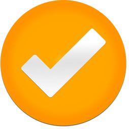

ADMISIÓN 2022
El colegio Julio Rivas atiende estudiantes que presentan diagnóstico de Discapacidad Intelectual y/o Retos Múltiples.

Alumnos Antiguos
- Este se realiza de manera presencial en el establecimiento.
- Se enviará a los apoderados comunicación informativa vía correo electrónico, acerca del proceso de matrícula de los alumnos, señalando día, hora y nivel que se matriculará.
- Previamente se informa acerca de la situación de cada estudiante, explicando si existe la posibilidad de que a su hijo(a) pueda otorgársele el alta fonoaudiológica o si debe continuar en la escuela debido a que no ha logrado avanzar de acuerdo a lo observado durante el año escolar. Este correo será enviado antes que comience el proceso de admisión escolar para que tenga oportunidad de postular a otros establecimientos educacionales.
- Es importante mencionar que la única forma de conocer el diagnóstico final del estudiante, es a través del proceso de reevaluación fonoaudiológica , en el cual se aplicarán las pruebas estandarizadas para determinar el alta o permanencia del estudiante en la escuela de lenguaje. Este proceso se realiza al final del año escolar entre los meses de Noviembre- Diciembre
- De los cupos que no se completen en un determinado curso, se procederá a completar la capacidad de los cursos con alumnos nuevos.Este será las vacantes que serán publicadas en la pagina web escuela y serán contactados los apoderados de acuerdo al orden de inscripción, que es a través de llamada telefónica, enviando un mail nuestro correo electrónico info@kewen.cl y/o completando el formulario de admisión proceso 2022 que aparece en nuestro sitio web.
Alumnos Nuevos
- Este se realiza de manera presencial en el establecimiento.
- Se enviará a los apoderados comunicación informativa vía correo electrónico, acerca del proceso de matrícula de los alumnos, señalando día, hora y nivel que se matriculará.
- Previamente se informa acerca de la situación de cada estudiante, explicando si existe la posibilidad de que a su hijo(a) pueda otorgársele el alta fonoaudiológica o si debe continuar en la escuela debido a que no ha logrado avanzar de acuerdo a lo observado durante el año escolar. Este correo será enviado antes que comience el proceso de admisión escolar para que tenga oportunidad de postular a otros establecimientos educacionales.
- Es importante mencionar que la única forma de conocer el diagnóstico final del estudiante, es a través del proceso de reevaluación fonoaudiológica , en el cual se aplicarán las pruebas estandarizadas para determinar el alta o permanencia del estudiante en la escuela de lenguaje. Este proceso se realiza al final del año escolar entre los meses de Noviembre- Diciembre
- De los cupos que no se completen en un determinado curso, se procederá a completar la capacidad de los cursos con alumnos nuevos.Este será las vacantes que serán publicadas en la pagina web escuela y serán contactados los apoderados de acuerdo al orden de inscripción, que es a través de llamada telefónica, enviando un mail nuestro correo electrónico info@kewen.cl y/o completando el formulario de admisión proceso 2022 que aparece en nuestro sitio web.